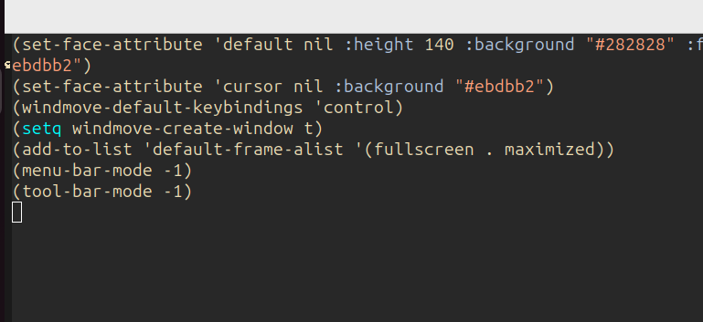

I started with Emacs right out of the box, no customizations. It looked like this:

Not exactly sure how the splash screen got turned off, but no matter, it always got in my way anyway. But I didn't like the white screen (it bothers my eyes), so I changed it to a darker hue with this bit of Emacs Lisp:
(set-face-attribute 'default nil
:height 140 :background "#282828"
:foreground "#ebdbb2")
(set-face-attribute 'cursor nil
:background "#ebdbb2")
This gave me a bit of a better look:

I typically use lots of windows, and those require some keychords, so I simplified it a bit with windmove:
(windmove-default-keybindings 'control)
(setq windmove-create-window t)
Now I can switch windows by just pressing Ctrl-{direction-arrow}, and if there isn't one in that direction, it will create one. Now I don't have to interrupt the flow of my thinking to get a new window or switch between them.
Also, I do everything I possibly can in Emacs, so I really want it to come up full-screen. I did that with:
(add-to-list 'default-frame-alist
'(fullscreen . maximized))
I won't try to cram a full screen into the page, you get the drift. From now on, I'll just show the relevant parts of the screen so it looks halfway decent on a phone.
The next thing I didn't need were the menus. I'd like to have the real-estate back from the menubar and the toolbar, so I implemented this eLisp:
(menu-bar-mode -1)
(tool-bar-mode -1)
Looks much cleaner without them:
© 2025 by Bill Wear. All Rights Reserved.